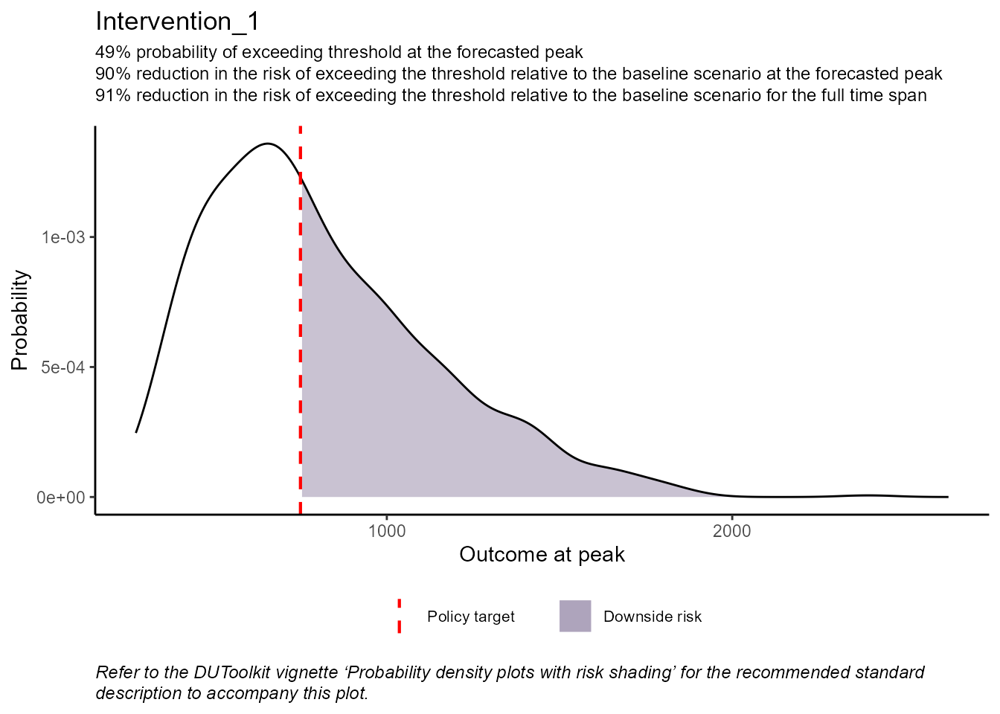
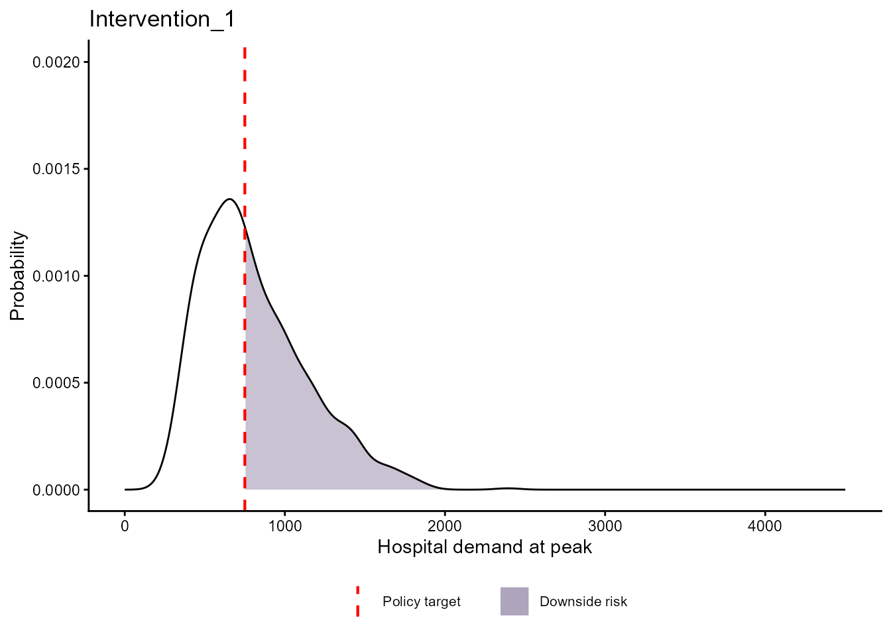

Probability density plots with risk shading
density_plots.RmdAnother important factor for decision-makers is assessing the severity of the situation at its expected peak (or minimum). To do this, we plot the probability density of the highest (or lowest if the threshold is a minimum) projected outcome across simulation runs for a given policy alternative. The decision threshold is shown directly on the plot as a vertical line. The area under the probability density curve where the threshold value is exceeded is shaded to visually display the downside risk of the policy alternative.
In our example, we define the peak as the highest hospital demand
observed in each simulation run. First, we find these values using the
get_max_min_values() function.
# define inputs
tmin <- min(psa_data$Intervention_1[, 1]) # minimum simulation time
tmax <- max(psa_data$Intervention_1[, 1]) # maximum simulation time
Dt <- c(rep(750, length(tmin:tmax))) # decision threshold vector
Dt_max <- TRUE # indicates the threshold values are maximums
## find peak values
peak_values_list <- get_max_min_values(psa_data, tmin, tmax, Dt_max)
head(peak_values_list$Baseline)
#> N outcome i_time
#> 1 1 4207.443 2021-01-26
#> 2 2 1681.521 2021-02-01
#> 3 3 2539.177 2021-02-04
#> 4 4 2969.721 2021-01-31
#> 5 5 3073.741 2021-02-05
#> 6 6 1520.144 2021-02-08We then use the plot_density() function to generate the
probability density plots.
# define single threshold value for the peak
D <- 750
# calculate risk measure
risk_measures_list <- calculate_risk(psa_data, tmin, tmax, Dt, Dt_max)
# generate density plots
density_plots <- plot_density(
peak_values_list, D,
Dt_max, risk_measures_list
)
## example plot
density_plots$Intervention_1
All plotting functions in the DUToolkit return ggplot2 plot objects. You can adjust/customize the plots after they have been generated (ggplot2 cheat sheet).
# customize plots
## add fixed x/y-axis limits and change the label of the x-axis
density_plots <- lapply(density_plots, function(x) {
x + ggplot2::ylim(0, 0.002) + ggplot2::xlim(0, 4500) +
ggplot2::labs(x = "Hospital demand at peak")
})
## remove subtitle and caption
density_plots <- lapply(density_plots, function(x) {
x + ggplot2::labs(subtitle = NULL, caption = NULL)
})
## example plot
density_plots$Intervention_1
The calculate_max_min_risk() function is used within
plot_density() to calculate the risk measures at the peak
values (or lowest values if the threshold is a minimum), which is then
displayed in the plot subtitle. Additionally,
calculate_max_min_risk() can be used independently to
generate results without creating density plots.
# calculate risk measures at peak values
peak_risk <- calculate_max_min_risk(peak_values_list, D, Dt_max)
# generate risk table dataframe
peak_risk_table <- tabulate_risk(peak_risk, n_s = length(peak_risk))
peak_risk_table
#> Baseline Intervention 1
#> Risk "1500.79" "156.52"
#> Policy risk impact "-" "-89.57%"The calculate_threshold_probs() function calculates the
probability that the peak (or minimum) value exceeds (or is below) a
specified threshold(s) using a Riemann sum approach.
# define vector of threshold values
Dp <- c(750, 1000, 2000)
# calculate probability that peak value is > specified threshold values
peak_probs <- calculate_threshold_probs(peak_values_list, Dp, Dt_max)
peak_probs$Baseline
#> 750 1000 2000
#> 0.9494 0.8887 0.5895Sharing outputs
The proability density plots further supplement the risk table and the time-outcome fan plots by quantifying and visually displaying how likely it is that the outcome at its projected peak will exceed the threshold, capturing the downside risk associated with the projected peak outcome.
We also recommend the following standard description for presenting the probability density plots to decision-makers. We provide the standard description in paragraph and bullet point form for ease of use.
Standard description
These probability density graphs show the distribution of the highest1 forecasted outcome2 (i.e., the peak3). The red dashed line indicates the policy target. The shaded area indicates how likely it is that the outcome4 at its forecasted peak5 will exceed6 the policy target, or simply, the amount of downside risk. A larger shaded area means more downside risk.
Standard description bullet points
These probability density graphs show:
The distribution of the highest7 forecasted outcome8 (i.e., the peak9).
The red dashed line indicates the policy target.
The shaded area indicates how likely it is that the outcome10 at its forecasted peak11 will exceed12 the policy target (i.e, the amount of downside risk).
A larger shaded area means more downside risk.